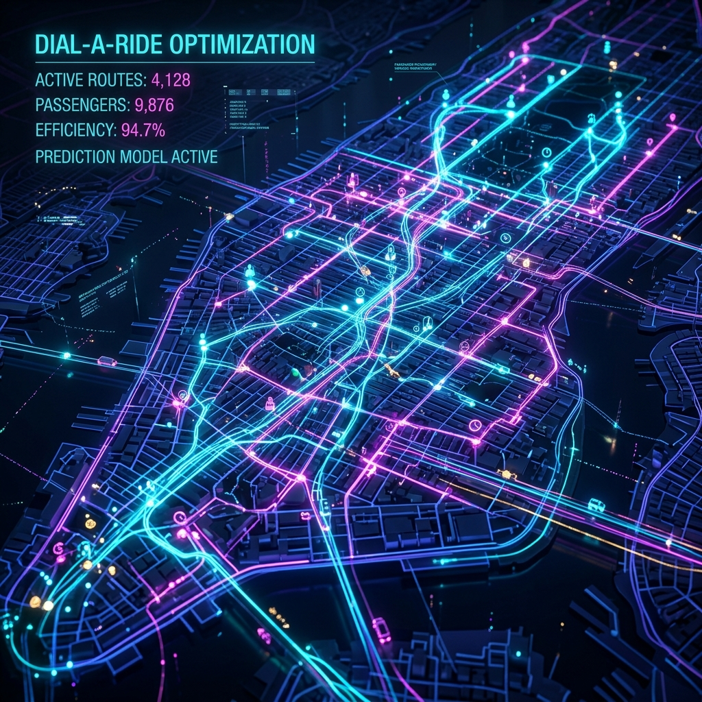
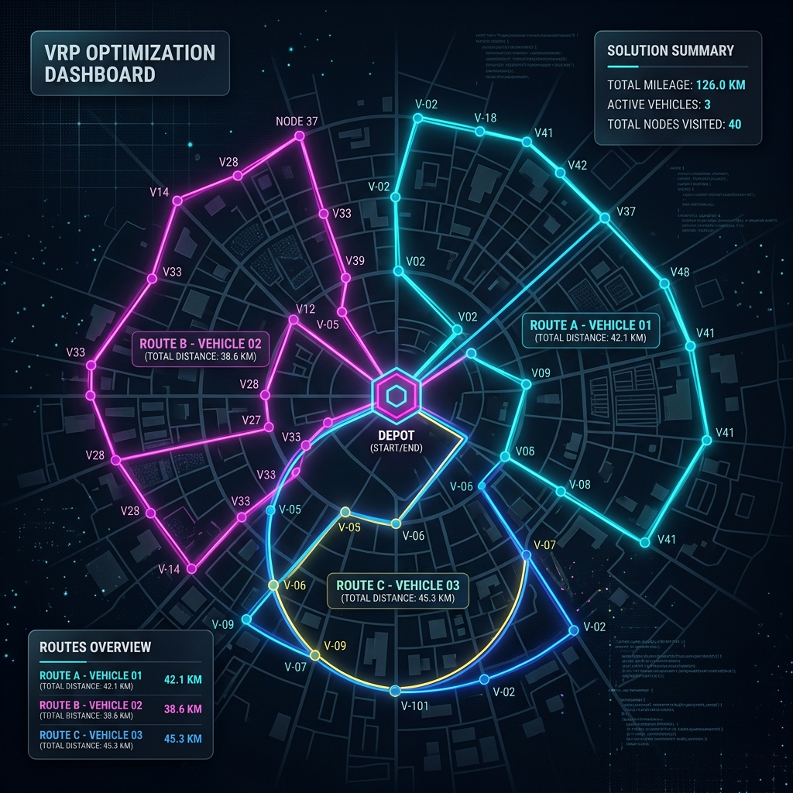
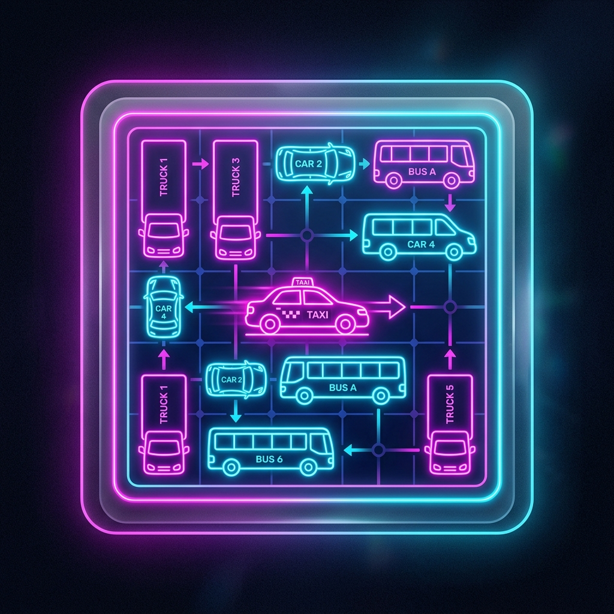

Naše Projekty

Simulace městského provozu
Vývoj realistických modelů postavených na reálných datech pro plánování moderní městské mobility.
Detail projektu →
Predikce tras záchranných složek
Optimalizace průjezdu IZS pomocí prediktivních algoritmů a chytré komunikace se semafory.
Detail projektu →
AgentDrive 2.0
Vlastní in-house simulátor postavený na fyzikálním enginu PhysX pro věrnou reprezentaci provozu.
Detail projektu →
Řešení DARP s využitím neuronových sítí
Zrychlení exaktního plánování dopravy na vyžádání pomocí predikce proveditelnosti.
Detail projektu →
Multi-objective VRP
Cluster-First Route-Second architektura spojující grafovou neuronovou síť s NSGA-II pro vyvážené doručování.
Detail projektu →
Rush Hour Game
Interaktivní logická minihra.
Vyzkoušet →Témata závěrečných prací
Hledáme motivované studenty pro bakalářské i diplomové práce.
Vedoucí: Adéla Kubíková
Práce na aktualizaci a rozvoji metod řešících Vehicle Routing Problem (VRP) s využitím moderních architektur neuronových sítí. Ideální pro studenty se zájmem o Deep Learning a aplikovanou AI.
Vedoucí: Petr Tomášek
Zpracování reálných historických trajektorií pro modelování výjezdů IZS. Cílem je včas komunikovat se semafory pro udělení prioritního průjezdu.
Vedoucí: Dle domluvy
Práce na vývoji nových a údržbě a inovacích stávajících nástrojů využívaných v dopravních projektech.
Vedoucí: Temirlan Kurbanov
Spojování různých datových zdrojů (FCD, kamery, dopravní statistiky) pro stavbu komplexních modelů ve špičkových simulátorech (např. SUMO) a testování dopadů různých scénářů.